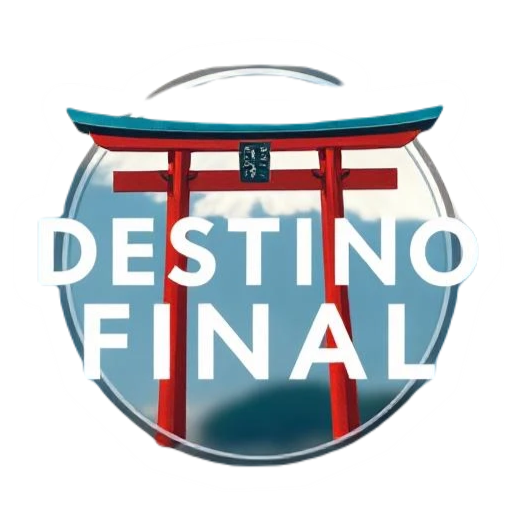

☰
Inicio
Destinos
Tokio
Kamakura
Quienes somos
Contacto
Destinos para todos los viajeros
Kamakura
Antigua capital de Japón con el gran buda gigante.
Más de 80 templos y santuarios, situados en las colinas que la rodean, comunicados entre sí por varios senderos muy agradables de recorrer.
Recomendamos pasar 1 día en este destino.